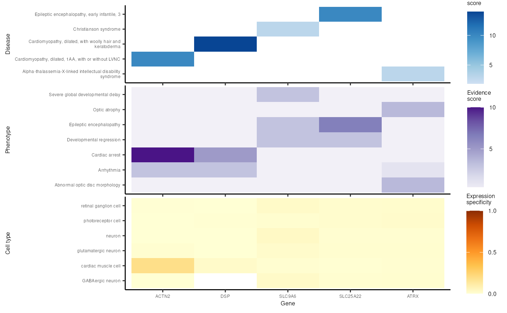

R/prioritise_targets_multiheatmap.R
prioritise_targets_multiheatmap.RdPrioritise targets: multi-heatmap
prioritise_targets_multiheatmap(
top_targets,
prioritise_targets_network_out,
ctd_list = load_example_ctd(c("ctd_DescartesHuman.rds", "ctd_HumanCellLandscape.rds"),
multi_dataset = TRUE),
gene_order = NULL,
hpo = HPOExplorer::get_hpo(),
gencc_extra = list(),
size = 6,
width = 50,
heights = NULL,
show_plot = TRUE
)A results table after it has been annotated with add_disease and add_symptom_results.
Output of prioritise_targets_network.
A named list of CellTypeDataset objects each created with generate_celltype_data.
The order in which to show genes in heatmap x-axis.
Human Phenotype Ontology object, loaded from get_ontology.
Extra rows to add to the diseases GenCC data.
Plot text size.
Width of the saved plot.
Passed to wrap_plots.
Print the plot to the console.
top_targets <- MSTExplorer::example_targets$top_targets[1:10]
prioritise_targets_network_out <- prioritise_targets_network(
top_targets = top_targets)
#> Adding logFC column.
#> Mapping cell types to cell ontology terms.
#> Adding stage information.
#> Creating network.
#> Making hoverboxes from: 'node', 'node_type', 'q', 'CellType', 'ancestor_name', 'disease_id', 'ontLvl', 'definition', 'hpo_name', 'hpo_id', 'disease_name', 'shape', 'name'
#> Adding hoverboxes to data.table.
#> Loading required namespace: visNetwork
#> Creating visNetwork plot.
#> ‘title’ column already exists. Skipping hoverbox creation.
#> Using palette: kovesi.linear_bmy_10_95_c78
#> Warning: Can't find 'name' in node data.frame
#> Saving plot --> /tmp/RtmpsW0tFt/file100e2ddef294_prioritise_targets_network.html
out <- prioritise_targets_multiheatmap(
top_targets = top_targets,
prioritise_targets_network_out = prioritise_targets_network_out,
ctd_list=load_example_ctd("ctd_DescartesHuman.rds", multi_dataset = TRUE))
#> Loading ctd_DescartesHuman.rds
#> Mapping cell types to cell ontology terms.
#> Adding stage information.
#> Gathering data from GenCC.
#> Importing cached file.
#> Evidence scores for:
#> - 11050 diseases
#> - 5533 genes
#> + Version: 2025-08-08
#> Adding disease_name and disease_description.
#> Constructing HPO gene x phenotype matrix.
#> Reading cached RDS file: phenotype_to_genes.txt
#> + Version: v2025-05-06
#> Annotating gene-disease associations with Evidence Score
#> Gathering data from GenCC.
#> Importing cached file.
#> Evidence scores for:
#> - 11050 diseases
#> - 5533 genes
#> + Version: 2025-08-08
#> Adding HPO names.
#> Translating ontology terms to names.
#> Mapping cell types to cell ontology terms.
#> Adding stage information.
